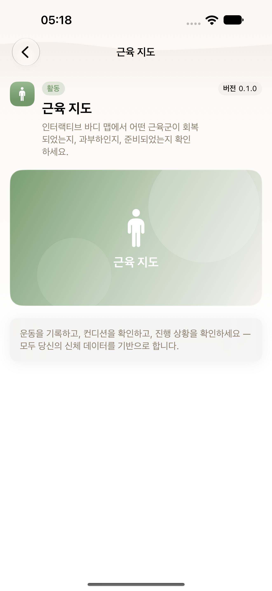
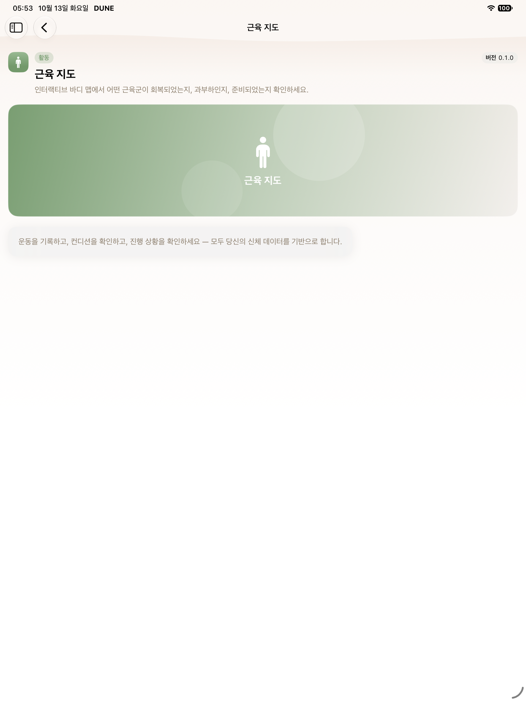
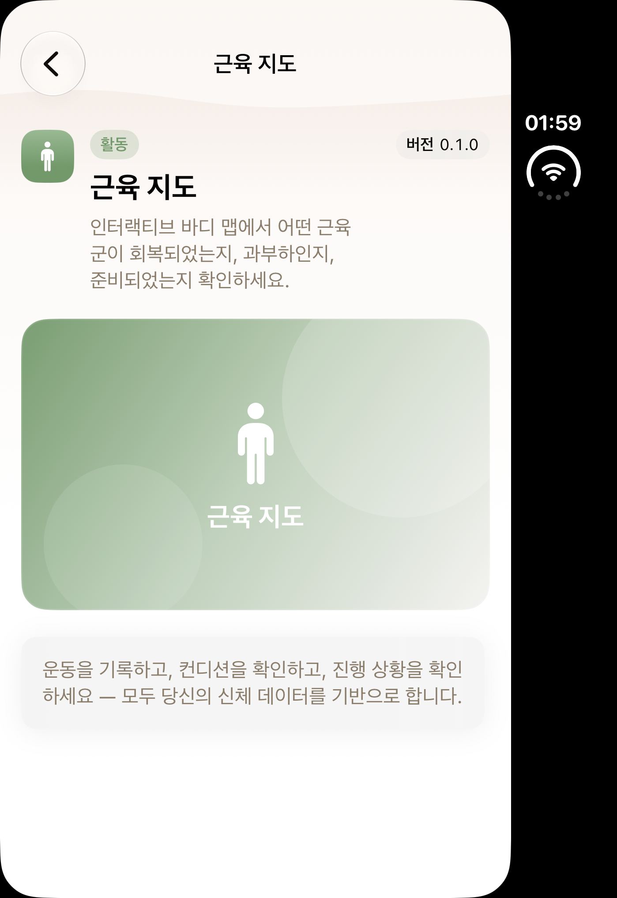
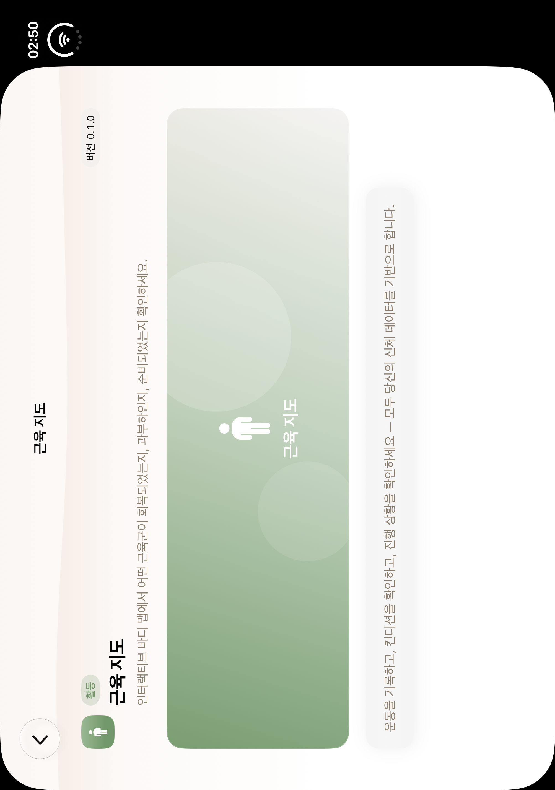
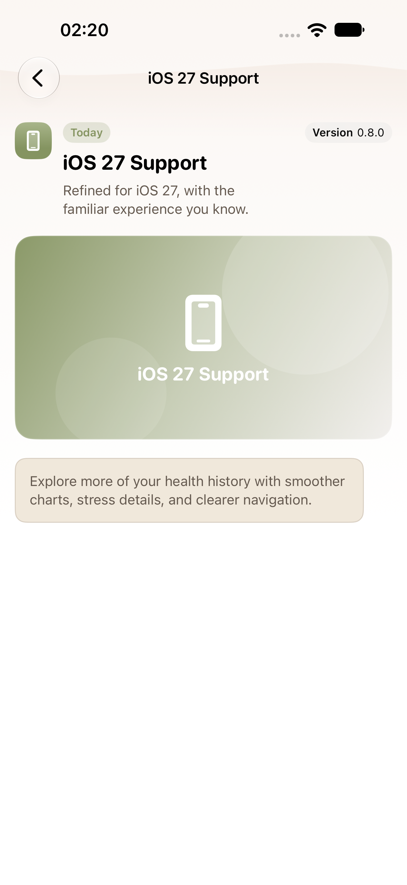
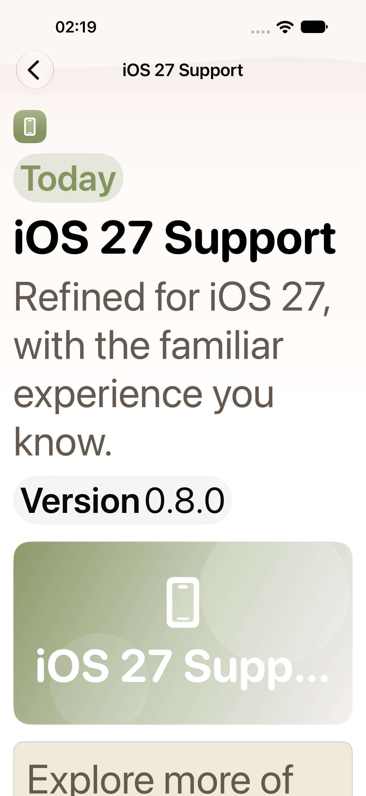
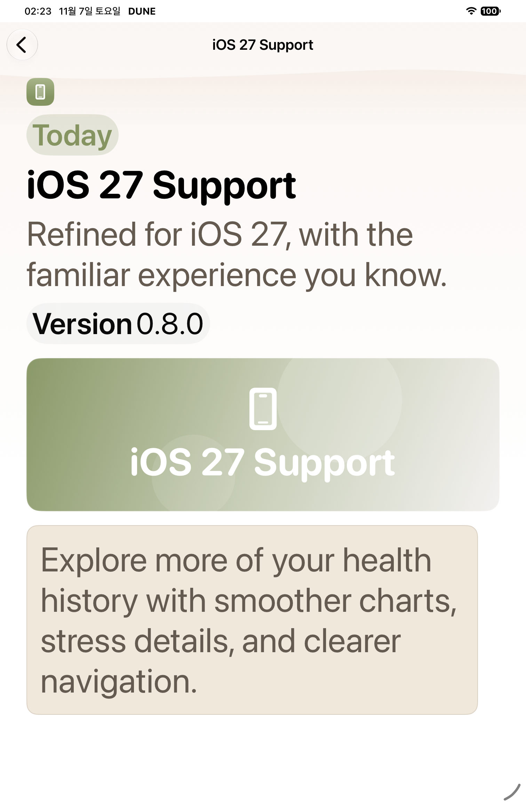

S06 · B08 native gallery
Native PNG/AX pairs are classified by completed selector receipts. Historical captures and failure diagnostics are separate. See manifest for source revisions and limits.
Pending or limited- Duo closed/open current-source capture absent: owned device migration failed before SDK; historical baselines only
- Before-teardown failure attachments never count as passed S05/S06 evidence
- Initial phone attempt failed compilation before execution: SDK reports 0 tests. It is preserved as a failed attempt, never a successful 0-test gate.

regular · historical
S06 historical baseline

ipad · historical
S06 historical baseline

duo · historical
S06 historical baseline

duo-open · historical
S06 historical baseline

regular · after
Manual current feature detail
AX tree regular · after
regular · after
MAX feature header
AX tree
regular · after
MAX readable summary
AX tree ipad · after
ipad · after
Manual current feature detail
AX tree
ipad · after
MAX feature header
AX treeipad · after
MAX readable summary
AX tree